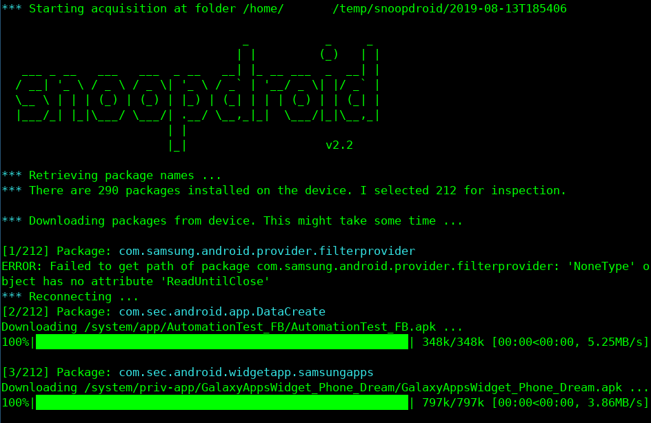

Extract data for Further Analysis
To extract data for analysis, you can use Snoopdroid developed by Claudio Guarnieri. This tool allows to extract the list of android applications installed on the phone, and check on VirusTotal and Koodous if they are known to be malicious.
Installation on Linux
In order to run Snoopdroid on Debian you will need to install the following dependencies:
apt install python3 python3-pip python3-dev build-essential libssl-dev libffi-dev swig android-sdk-platform-tools
Make sure to generate your adb keys with:
adb keygen ~/.android/adbkey
You can then install Snoopdroid with pip3:
pip3 install rsa
pip3 install snoopdroid
Installation on Mac OSX
Running Snoopdroid on Mac requires Xcode and homebrew to be installed.
In order to install adb and other dependencies use:
brew install openssl swig libusb python3
brew install homebrew/cask/android-platform-tools
Make sure to generate your adb keys:
mkdir $HOME/.android
adb keygen $HOME/.android/adbkey
adb pubkey $HOME/.android/adbkey > $HOME/.android/adbkey.pub
You can now install Snoopdroid with pip3:
pip3 install rsa
pip3 install snoopdroid
Set-up ADB USB Debugging
To use Snoopdroid, you need to enable USB debugging in the developers options. Here are the instructions to do so from the official Android documentation :
- On Android 4.1 and lower, the Developer options screen is available by default.
- On Android 4.2 and higher, you must enable this screen as follows:
- Open the Settings app.
- (Only on Android 8.0 or higher) Select System.
- Scroll to the bottom and select About phone.
- Scroll to the bottom and tap Build number 7 times.
- Return to the previous screen to find Developer options near the bottom.
At the top of the Developer options screen, you can toggle the options on and off (figure 1). You probably want to keep this on. When off, most options are disabled except those that don't require communication between the device and your development computer.
Next, you should scroll down a little and enable USB debugging. This allows Android Studio and other SDK tools to recognize your device when connected via USB, so you can use the debugger and other tools.
To test that the USB connection is working, you can use the ADB shell, just run adb devices and check if you see a connected device. for instance :
> adb devices
List of devices attached
RF2F722NU0C device
You can test that the access is working by running adb shell, the phone will then ask you to confirm that the device is allowed to debug the phone.
Before using snoopdroid, you need to kill the adb service you just used with adb kill-server.
Run Snoopdroid
You can now launch Snoopdroid simply with snoopdroid. At each run, Snoopdroid will generate a new acquisition folder containing all the extracted APKs in the current working directory. You can change the base folder using:
snoopdroid --storage /path/to/folder
Optionally, you can decide to enable lookups of the SHA256 hash of all the extracted APKs on VirusTotal and/or Koodous. While these lookups do not provide any conclusive assessment on all of the extracted APKs, they might highlight any known malicious ones.
snoopdroid --virustotal
snoopdroid --koodous
Or, to launch all available lookups:
snoopdroid --all-checks

You will then see a folder containing a packages.json file with the list of packages installed on the phone and a folder named apks containing the APK files.
Extract of a packages.json file :
{
"name": "com.android.cts.priv.ctsshim",
"files": [
{
"path": "/system/priv-app/CtsShimPrivPrebuilt/CtsShimPrivPrebuilt.apk",
"stored_path": "/home/user/snoopdroid/2019-08-13T154540/apks/com.android.cts.priv.ctsshim.apk",
"sha256": "1b930afd81f765a3366f21e57cfcfdefc867fda93e859b136aeef27ecfd9cb0c"
}
]
},